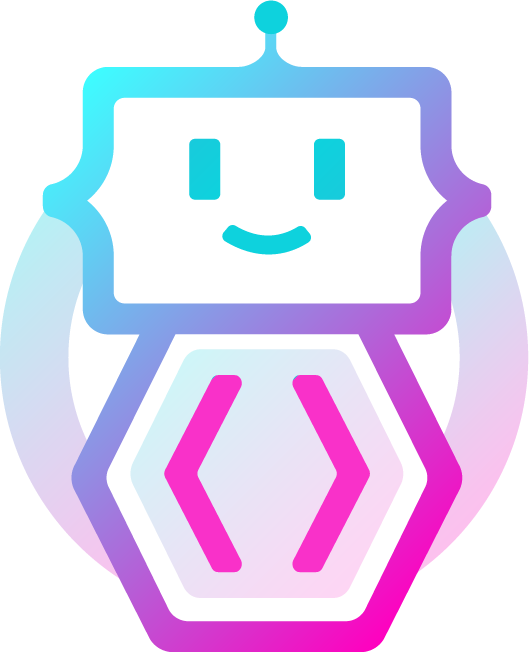

A practical, discussion-heavy CPD programme for youth practitioners — built with Kahoot, Mentimeter, Padlet, and real conversations.
Six 3-hour sessions. Each session has presentation slides, a facilitator guide, and 10–13 structured activities. No app required — use the tools you already know.
Practitioners experience digital youth work from a young person's perspective and identify how environment design is practice.
Practitioners test whether their stated values survive contact with real digital design and live pressure.
Practitioners navigate ethical tensions across public, private, and direct message digital contexts.
Practitioners distinguish between engagement mechanics that serve young people and those that exploit them.
Practitioners analyse digital platforms from a young person's perspective and locate where power, risk, and agency actually sit.
Practitioners build, test, and improve a functional digital youth work activity for a real group.